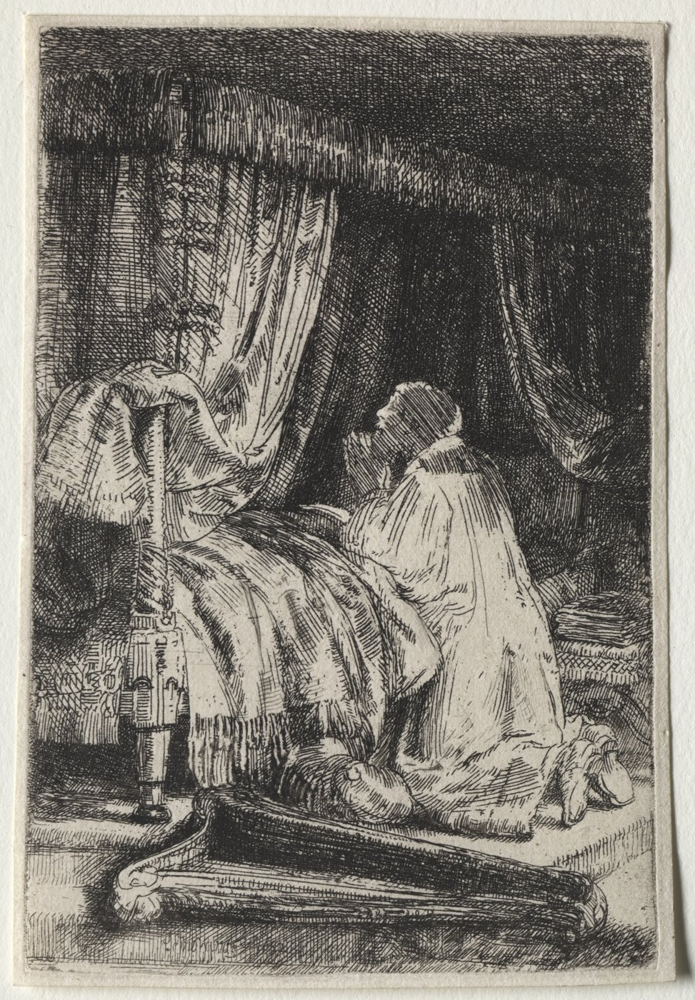

Psalm 62 — The Mister Translation

Psalm 62:1 and 5. The psalm names the speaker only as David and says nothing of a bedchamber, a harp or a book; the room, the harp and the kneeling are Rembrandt’s way of showing a man whose soul is still for God.

Translator's Notes — verse by verse
⭐ Only. The psalm’s word is akh, “only”, “truly”, “surely”, and it opens verses 1, 2, 4, 5, 6 and 9. The shelf prints it three ways: as truly and surely in the KJV (“Truly my soul waiteth upon God”), as a different word each time in the NIV (“Truly my soul finds rest in God”), and as one word, Indeed, in the NWT 1984 (“Indeed toward God is my soul”). The ASV reads the word as only God, with the “only” on him: “My soul waiteth in silence for God only”. This translation prints “only” each time and marks that it can also be “truly”.
⭐ Stillness. “Only for God is my soul stillness” stands in this one verse; the noun is dumiyyah, silence or stillness, and the word stands in two verses, here and Psalm 39:2 (the Hebrew Bible’s 39:3), where the speaker is silent and in pain. The shelf: the KJV has “waiteth upon God”, the ASV “waiteth in silence”, the NIV “finds rest”, the TLB “I stand silently before the Lord, waiting for him to rescue me” and the Douay “Shall not my soul be subject to God?”, with the Latin’s own subject for the silence. The heading is lamnatseach al Yeduthun, “for the leader, on Jeduthun”, the Levite singer of the temple music; it is part of verse 1 and is not numbered apart.
⭐ The refrain. Verse 2 is the first of two lines that are almost the same: akh hu tsuri vishu’ati misgavi lo emmot rabbah. The KJV has “He only is my rock and my salvation; he is my defence; I shall not be greatly moved”, the ASV “He is my high tower; I shall not be greatly moved”, the NIV “he is my fortress, I will never be shaken” and the NWT 1984 “my secure height; I shall not be made to totter very much”. Misgav is a height out of reach, a high place; the rock is tsur, and the word rabbah, “greatly”, is the one that will not come back at verse 6.
⚠ Who is the leaning wall? The Hebrew is ad anah tehotetu al ish tertsachu kullekhem kekir natuy gader haddechuyah, and the first verb, tehotetu, stands in this one verse and what it means is not settled; “like a leaning wall, a fence pushed over” stands in this one verse too. The line can say that the attackers are the wall, or that the man is: the KJV has “ye shall be slain all of you: as a bowing wall shall ye be, and as a tottering fence”, the Geneva “ye shall be as a bowed wall, or as a wall shaken” and the NWT 1984 “All of YOU are like a leaning wall”, for the attackers; the ASV has “That ye may slay him, all of you, Like a leaning wall, like a tottering fence?”, the NIV “Would all of you throw me down— this leaning wall, this tottering fence?” and the Douay “you all kill, as if you were thrusting down a leaning wall, and a tottering fence”, for the man. The NIV also puts “me” where the Hebrew has the man. This translation prints the line as the Hebrew has it, and marks that the wall is ambiguous.
⭐ From his height. The plot is mis’eto, “from his height”, to thrust him down from where he stands: the KJV has “They only consult to cast him down from his excellency”, the ASV “They only consult to thrust him down from his dignity” and the NIV “Surely they intend to topple me from my lofty place”; the Douay reads “But they have thought to cast away my price”, which is not what the Hebrew has. The height is the same as the speaker’s misgav of verse 2: they would drop him from a height, and he says his height is God.
⭐ Mouth and inward part. “with their mouth they bless, and in their inward part they curse” stands in this one verse. The KJV has “they bless with their mouth, but they curse inwardly” and the NIV “With their mouths they bless, but in their hearts they curse”. Selah follows (selah).
⭐ Said to the soul. Verse 5 is verse 1 turned into an order: akh lElohim domi nafshi, “only for God be still, my soul”, with domi, “be still”, for dumiyyah, and tiqvati, “my hope”, for yeshu’ati, “my salvation”. “Only for God be still, my soul” stands in this one verse. The KJV has “My soul, wait thou only upon God; for my expectation is from him”, the ASV “My soul, wait thou in silence for God only; For my expectation is from him”, the NIV “Yes, my soul, find rest in God; my hope comes from him”, the NWT 1984 “wait silently, O my soul”, the Geneva “Yet my soul, keep thou silence unto God: for mine hope is in him” and the Douay “But be thou, O my soul, subject to God: for from him is my patience”.
⭐ Without “greatly”. Verse 6 repeats verse 2 with one word left out: the first time, lo emmot rabbah, “I will not be greatly moved”; the second, lo emmot, “I will not be moved”. The KJV has “I shall not be moved” where it had “greatly moved”, the NIV “I will not be shaken” where it had “never be shaken” and the NWT 1984 “I shall not be made to totter” where it had “very much”. What he was sure of in the first telling, he is surer of in the second: not moved at all.
⭐ My salvation and my glory. At verse 7 salvation changes its form, from yeshu’ati (verses 1, 2, 6) to yish’i, and it is joined to kevodi, “my glory”: the KJV has “In God is my salvation and my glory: the rock of my strength, and my refuge, is in God”, the NIV “My salvation and my honor depend on God; he is my mighty rock, my refuge” and the NWT 1984 “Upon God are my salvation and my glory”.
⭐ Pour it out. “pour out your heart before him” stands in this one verse, and it is said to the whole people, am, not to the soul: the KJV has “Trust in him at all times; ye people, pour out your heart before him: God is a refuge for us”, the NIV “Trust in him at all times, you people; pour out your hearts to him, for God is our refuge”, the Douay “Trust in him, all ye congregation of people: pour out your hearts before him”, the Geneva “Trust in him always, ye people; pour out your hearts before him, for God is our hope” and the TLB “Pour out your longings before him, for he can help”. It is the act of Hannah (1 Samuel 1:15, now on these pages) and of the one who remembers and “pours out his soul” in Psalm 42:4, the Hebrew Bible’s 42:5 (now on these pages). The refuge, machaseh, is that of Psalm 46:1, the Hebrew Bible’s 46:2, with the words turned round.
⭐ A breath. Hevel is the “vanity” of Ecclesiastes, and it is literally a breath: “Only a breath are the sons of Adam” stands in this one verse. The KJV has “Surely men of low degree are vanity, and men of high degree are a lie”, the NIV “Surely the lowborn are but a breath, the highborn are but a lie”, the NWT 1984 “Indeed the sons of earthling man are an exhalation, The sons of mankind are a lie”, the Geneva “Yet the children of men are vanity, the chief men are liars” and the TLB “The greatest of men or the lowest—both alike are nothing in his sight”. The two halves, bnei adam and bnei ish, are the ordinary and the important (the “low” and the “high” of the shelf), and the verse says both together weigh less than a breath.
⭐ In the scales. Bemoznayim la’alot, “in the scales to rise”: the pan with them in it goes up, because it holds nothing. The KJV has “to be laid in the balance, they are altogether lighter than vanity”, the ASV “In the balances they will go up; They are together lighter than vanity”, the NIV “If weighed on a balance, they are nothing; together they are only a breath”, the NWT 1984 “When laid upon the scales they are all together lighter than an exhalation” and the TLB “They weigh less than air on scales”. The Aramaic of Daniel 5:27, “you have been weighed in the balances and found lacking”, is the same picture (now on these pages).
⭐ Do not become a breath. The verb of verse 10, tehbalu, is the root of hevel: “in robbery do not become vain”, that is, do not become a breath. The KJV has “Trust not in oppression, and become not vain in robbery: if riches increase, set not your heart upon them”, the NIV “Do not trust in extortion or put vain hope in stolen goods; though your riches increase, do not set your heart on them”, the NWT 1984 “Nor become vain in sheer robbery” and the Douay “Trust not in iniquity, and cover not robberies”. “do not set your heart” stands in this one verse.
⚠ Once, twice. “Once God has spoken” stands in this one verse, and so does “twice I have heard this”. It is a counting line, one and two, and the shelf cannot agree on whether the numbers count times or things. The KJV has “God hath spoken once; twice have I heard this; that power belongeth unto God”, the NWT 1984 “Once God has spoken, twice I have heard even this, That strength belongs to God” and the Geneva “God spake once or twice, I have heard it”, for times; the NIV has “One thing God has spoken, two things I have heard” and the Douay “God hath spoken once, these two things have I heard”, for things, and the two things are what follow, strength and loyal love. This translation prints “once… twice”, and says that the two things are a good reading.
⭐ Strength, loyal love. Oz, “strength”, is God’s (verse 11) and chesed, “loyal love”, is his (verse 12): the KJV has “Also unto thee, O Lord, belongeth mercy”, the ASV “Also unto thee, O Lord, belongeth lovingkindness”, the NIV “and with you, Lord, is unfailing love”, the Douay “And mercy to thee, O Lord” and the Geneva “And to thee, O Lord, mercy”. ⚠ The Name is not written in this psalm. God is Elohim seven times, at verses 1, 5, 7 (twice), 8 and 11 (twice), and verse 12 has Adonai, “Lord”; the NWT 1984 has “Also loving-kindness belongs to you, O Jehovah”, so it prints the Name where the Hebrew has the title.
⭐ You repay. “for you repay a man according to his work” stands in this one verse: the KJV has “thou renderest to every man according to his work”, the NIV “You reward everyone according to what they have done”, the NWT 1984 “you yourself pay back to each one according to his work” and the Douay “thou wilt render to every man according to his works”. It is the line the New Testament quotes when it says the Son of Man will repay each one (Matthew 16:27), that God “will render to each one according to his works” (Romans 2:6) and that “my wage is with me, to give back to each as his work is” (Revelation 22:12), all now on these pages. The psalm that began with a soul being silent ends on the one who pays.
Patterns worth carrying forward
Where this translation keeps the words exact and distinct: “only” for akh at verses 1, 2, 4, 5, 6 and 9; “stillness” and “be still” for dumiyyah and domi at verses 1 and 5; “my salvation” for yeshu’ati (verses 1, 2, 6) and yish’i (verse 7); “high tower” for misgav at verses 2 and 6 and “height” for mis’eto at verse 4; “breath” for hevel at verse 9; “strength” for oz and “loyal love” for chesed at verses 11 and 12; “Lord” for Adonai. The Name is not written anywhere in the psalm; Elohim is written seven times and Adonai once.
Echoes paid. 1 Samuel 1:15; Psalm 42:4 and 46:1; Daniel 5:27; Matthew 16:27; Romans 2:6; Revelation 22:12.
Echoes planted. Psalm 39:2 and 49:2. Neither is translated here yet.
⚠ A note on order: the Psalms stand on these pages at 1, 2, 8, 18, 19, 22, 23, 24, 25, 27, 32, 34, 37, 40, 42, 46, 51, 56, 62, 63, 90, 91, 100, 103, 118, 119, 121, 130, 138, 139, 145 and 150, chosen by how often they are read rather than in sequence. The sequential thread is unchanged: next in sequence is Psalm 3.